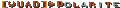
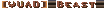
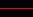
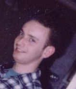
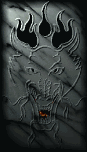

Real Name: Francis
Callsign:
Other akas:

Birthday: 21/08/1975
Hometown: Kortrijk, Belgium
Member since: 12/2002
Older affiliations: [LOD], [ISDN-K], [TOG], [XJ]
Favourite map: DM2
Favourite weapon: rocket launcher
Status:

inactive

Most players consider him the best Netquake player ever. The others simply fear him while in game. Both have lost before. Both will lose in future. Duel, teamplay or FFA makes no difference: give him a weapon and a map, and sooner or later the map belongs to him.